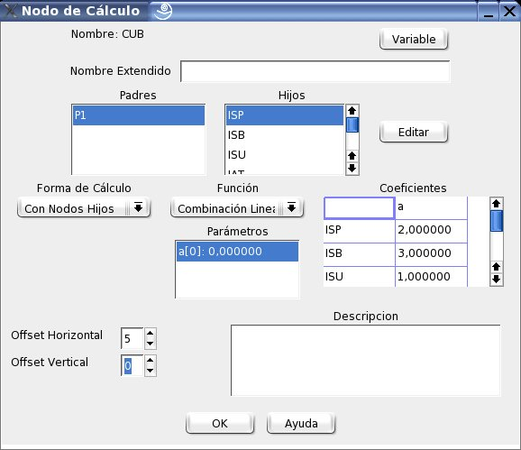

Edición de Nodos de Cálculo
La figura 6.1 muestra el cuadro de diálogo para edición de los nodos de cálculo. Para acceder a él puede seguirse alguno cualquiera de los siguientes procedimientos:
Posteriormente selecciónar con el boón izquierdo del ratón el nodo que se desea editar
Los principales componentes de este cuadro de diálogo se explican a continuación:
- Variable:
- Permite editar la variable lingüística asociada al nodo (ver capítulo 7)
- Padres:
- Muestra el listado de los nodos superiores a los que está inmediatamente conectado el nodo.
- Hijos:
- Muestra el listado de los nodos inferiores a los que está inmediatamente conectado el nodo.
- Función:
- Especifica el tipo de función aritmética que se efectuará sobre los valores de los nodos hijos (ver 6.2).
- Parámetros:
- En esta lista se muestran los parámetros de las funciones que no están asociados a los hijos (ver 6.2).
- Coeficientes:
- En esta lista se muestran los parámetros de las funciones que si están asociados a los hijos (ver 6.2); en cada fila se muestran los coeficientes de un mismo hijo.
- Forma de Calculo:
- Esta opción brinda las siguientes alternativas:
- Forzar como entrada:
- El valor entregado a los nodos padres será el valor por defecto de su variable lingüística, o el valor de una variable de igual nombre que el nodo asignado al caso respectivo.
- Con Nodos Hijos:
- El nodo no empleará la función de razonamiento aproximado para calcular el valor entregado a los nodos padres.
- Enlaces a otras Metodologías:
- El valor entregado a los nodos padres es tomado de otra metodología, cuyo nombre es especifíca en esta lista.
- Offset Horizontal:
- Este control permite desplazar a la derecha el nodo en la red. El mismo efecto se consigue presionando el botón derecho del ratón sobre el nodo y arrastrándolo (modo de vista Metodología como Red).
- Offset Vertical:
- Este control permite desplazar hacia abajo el nodo en la red. El mismo efecto se consigue presionando el botón derecho del ratón sobre el nodo y arrastrándolo (modo de vista Metodología como Red).
- Descripción:
- El usuario puede incluir un texto descriptivo del Nodo.
Figura 6.1:
Diálogo para edición de nodos en la red
|

|
Oscar Duarte
2005-10-17
 Metodología
Metodología